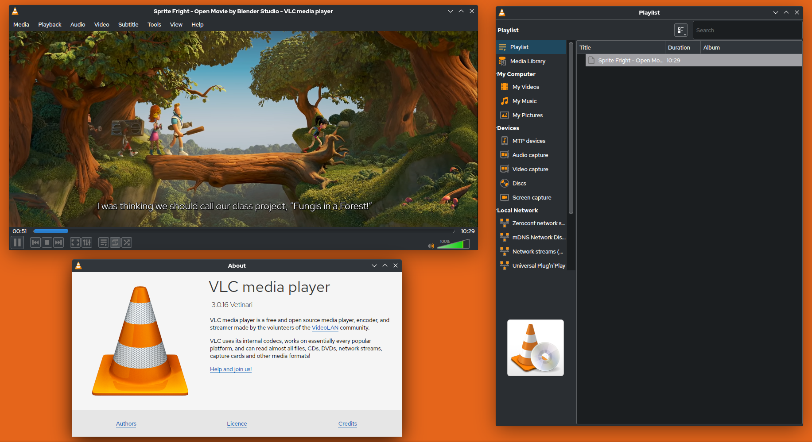
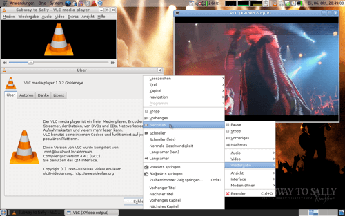

VLC Media Player
VLC Media Player, formerly known as the VideoLAN Client, is a free and open-source media player software developed by the VideoLAN project. Its design philosophy revolves around being a portable, cross-platform solution, making it accessible on both desktop operating systems and mobile platforms. VLC's journey began with a focus on video playback, but over the years, it has evolved into a multimedia powerhouse, supporting various audio and video formats.
⬇️ Download VLC (64-bit)
⭐⭐⭐⭐☆
4.3 / 5.0 — 3,200 downloads this week
4.3 / 5.0 — 3,200 downloads this week
Screenshots

